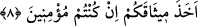

kimselere” bu sebeple “büyük mükâfât vardır.”
Fethu’r-Rahmân adlı eserde şöyle denmiştir. Bu âyet-i kerîmede Hz.Osman’a işâret
vardır. Fakat âyet-i kerîmenin hükmü ve bu hayırlı işlere dâvet etmesi dünya durdukça
devam edecektir.
et-Te’vilâtü’n-Necmiyye adlı eserde şunlar kaydedilmiştir: Bu âyet-i kerîme, meşâyih
ve âlimlerden her birine hitab ederek, Allah ve Peygamberine hakîkî, şühûdî ve yakînî
îmânın şartlarını kapsayan bütün bir îman ile inanmalarını emretmektedir. Ayrıca hak
edenlerin vehbî ilimleri feyiz yoluyla, istîdâdı olanlara da dirâset ilimleri tâlim yoluyla
öğrenmeleri tavsiyesinde bulunmaktadır. Çünkü âlimler kesbî ilimler, meşâyıh da
mârifet ve hikmetten ibâret olan vehbî ilimler husûsunda halîfelerdir. Bu sebeple, Allah
ve Peygamberinin kendilerine verdiği bu ilimleri hak eden kabiliyetli kimselere
öğretmeleri gerekir. Peygamberimiz (s.a.) Allah’tan naklen buyurduğu gibi “Sen infak et
ki, ben de sana ihsân edeyim.”[249] Yine Efendimiz (s.a.) “İlim dağarcığını büzüp
esirgeme! Yoksa o da senden büzülüp esirgenir.”[250] buyurmuştur. Bir başka hadîs-i
şerifte de şöyle buyurulmuştur: “Bildiği bir ilmi gizleyip öğretmeyen kimseye kıyâmet
gününde ateşten bir gem vurulur.”[251] Bu tehdid, kitapları öğrenmek ve faydalanmak
isteyenlere vermeyip habsedenlere de şâmildir. Özellikle ilmi engellemenin en büyük
sebeplerinden biri olan kitapların çok az olduğu ve öğrencilerin kendisinden istedikleri
kitabı sâhibinin vermediği zamanlarda bu tehdid geçerlidir. İmam Sehâvî’nin el-
Mekàsidü’l-hasene adlı eserinde de belirttiği gibi, bu kitap esirgeme hastalığında
olanların ve kitap bulamama ibtilâları çoktur.
Kalbinin bütün ferahlığı ve şuhûdî îmânla îmân edenler, bu vehbî ve kesbî ilimleri
infâk edenler, nefis ve sıfatlarına karşı şerîata uymaları ve meşrû olmayan tabiî
arzulardan uzak durmaları ve çirkin nefsânî sıfatlardan arınarak rûhânî niteliklere
bürünmeleri için seyr ü sülük yoluyla insanları irşâda gayret edenler için büyük mükâfât
vardır. Nitekim Allah Teâlâ, “Kim (Allah huzuruna) iyilikle gelirse ona getirdiğinin
on katı vardır.” buyurmuştur.
8. Peygamber sizi, Rabbinize îman etmeye çağırdığı halde niçin Allah’a
inanmıyorsunuz? Halbuki O, sizden kesin söz de almıştı. Eğer inanırsanız.
“Peygamber sizi, Rabbinize îman etmeye çağırdığı halde niçin Allah’a
inanmıyorsunuz?” Yâni sizde sâbit olan şey nedir ki, şu an içinde bulunduğunuz
îmânsızlık hâli hâsıl oluyor da inanmıyorsunuz! Hakîkî mânâsı ise şudur: Allah’a karşı
îmânsızlığınızın sebebi nedir? Bu cümle, îmânsızlığa sebep olan şeyin araştırılmasıyla
beraber, gerçekte sadece ve sadece onların inanmamış olmalarının sebebini inkâr ve